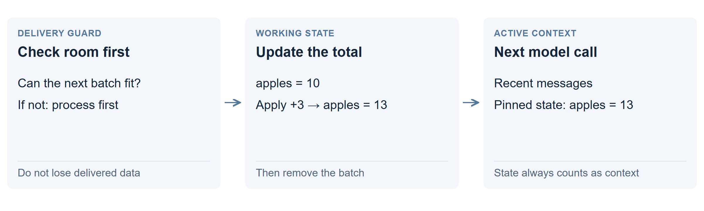

Self-editing with a protected state
Keep an explicit working state and protect new data until it has been processed. This revision keeps the self-editing idea while changing how the surrounding application handles memory.

How it works
- Check that there is room before fetching another batch.
- Apply the batch to a small state table, such as “apples: 13.”
- Keep that table visible on the next call, then remove the processed batch.
The revised prompt explicitly instructs the model to follow this routine. The application reloads STATE.txt into each call, protects delivered batches from rollback and removes earlier thinking.
What changed from the original?
The original agent could lose an unread batch during rollback. This version protects delivery and puts the state file at the end of each prompt. Its contents count as active context, whose numerical state stays in GPU memory. An external archive works differently: tools choose what to bring back.
What happened in the tests?
| Trial | Correct | Time |
|---|---|---|
| 121K, run 1 | 24/24 | 15 min |
| 121K, run 2 | 21/24 | 21 min |
| 478K stream | 24/24 | 8.2 min |
Both 121K runs retained every batch. The first used STATE.txt as instructed. The second kept a state block in the transcript instead and repeatedly rewrote its update script. A delete-handling bug in that script caused three wrong totals.
On the 478K stream, code processed most batches without showing their raw text to the model. That is useful processing beyond the window’s size, but does not show the model understanding 478K tokens at once.
Why might it help? What can still fail?
The model spends less effort reconstructing past work, and a long stream can fit if its useful state stays small. Correct bookkeeping still depends on correct code. A state-size check cannot tell whether a total is right; tasks needing all original details may outgrow the state budget.
Technical details: state placement and verified updates
The harness reloads a pinned STATE.txt into the final message and counts it against the context budget. Placing changing state last preserves more unchanged prompt text for prefix caching. It also checks available space before fetching and prevents rollback from deleting a delivered item.
A subsequent verified-fold revision keeps one update script, runs its self-test and checks how many lines of each kind it handled. With thinking enabled only when needed, it scored 24/24 on both 121K seeds in 6.6 and 5.7 minutes. Those are separate trials from the earlier revision shown above.
Completed results and failure analysis · Implementation and run instructions